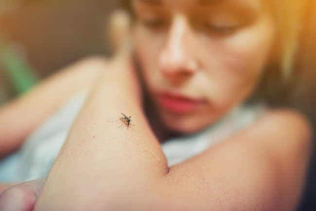

ZIKA
La fiebre del Zika es una enfermedad viral transmitida por mosquitos del género Aedes causada por el virus Zika (ZIKV), y que consiste en fiebre leve, sarpullido (principalmente maculo-papular), dolor de cabeza, dolor en las articulaciones, dolor muscular, malestar general y conjuntivitis no purulenta que ocurre entre 2 a 7 días después de la picadura del mosquito vector.
Una de cada cuatro personas infectadas puede desarrollar síntomas, pero en quienes sí son afectados la enfermedad es usualmente leve, con síntomas que pueden durar entre 2 y 7 días. La apariencia clínica es muchas veces similar a la del dengue, que también se transmite por mosquitos.
Sintomas Muchas personas infectadas con el virus del Zika no manifestarán síntomas o solo tendrán síntomas leves. Los síntomas más comunes del zika son estos:
- Fiebre
- Sarpullido
- Dolor de cabeza
- Dolor en las articulaciones
- Conjuntivitis (ojos enrojecidos)
- Dolor muscular
Copyright © 2021 IHSS – Instituto Hondureño de Seguridad Social. Todos los derechos reservados.
Tema: ColorMag por ThemeGrill. Funciona con WordPress.
Oficina Regional para las Américas de la Organización Mundial de la Salud
© Organización Panamericana de la Salud. Todos los derechos reservados.